CONTENT OUTLINE Java 发展及安装 基础语法 IDEA开发工具 数组 方法 类和对象 字符串 集合基础 继承 修饰符 多态 抽象类 接口 内部类 常用API 一、Java 基础 1、JDK/JRE/JVM
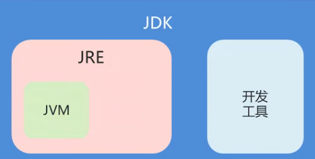
Oracle官网 下载JDK
安装过程略过，需要注意的是：
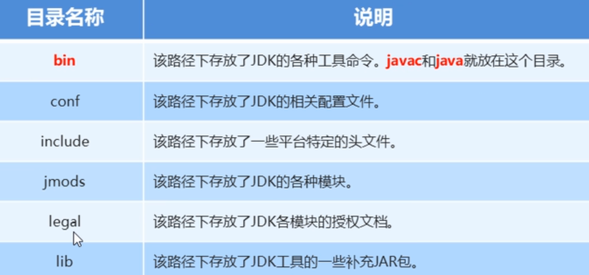
2、出发 2.1 常用DOS命令 1 2 3 4 5 6 7 8 win+R -> cmd // 打开cmd e: dir cd cd.. cd\ cls exit
2.1 Path配置 如果不配置只能使用如下调用java/javac
1 2 cmd :c :/Program Files/Java/jdk1 .8 .0 _202 /bin/javac
具体配置：
(系统变量)JAVA_HOME：c:/Program Files/Java/jdk1.8.0_202
(系统变量)Path中添加：%JAVA_HOME%\bin
1 2 3 4 5 6 public class HelloWorld public static void main (String[] args) System.out.println("HelloWorld" ); } }
3、基础语法 1 2 3 4 5 public class HelloWorld public static void main (String[] arg) System.out.println("HelloWorld" ); } }
3.1 注释 3.2 关键字 特点：
3.3 常量 常量类型 说明 举例 字符串常量 双引号括起 … 整数常量 … … 小数常量 … … 字符常量 单引号括起 … 布尔常量 布尔值 … 空常量 特殊值空值 Null
Null（空常量）不能直接输出 未赋初值不能直接输出 整数过大或不兼容不能输出，如 1 2 3 4 5 long b = 1111111111111 ;long bb = 111111111111L ;float f = 12.14 ; float f = 12.14F ;
3.4 数据类型
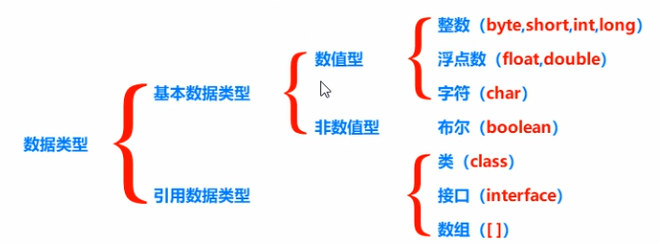
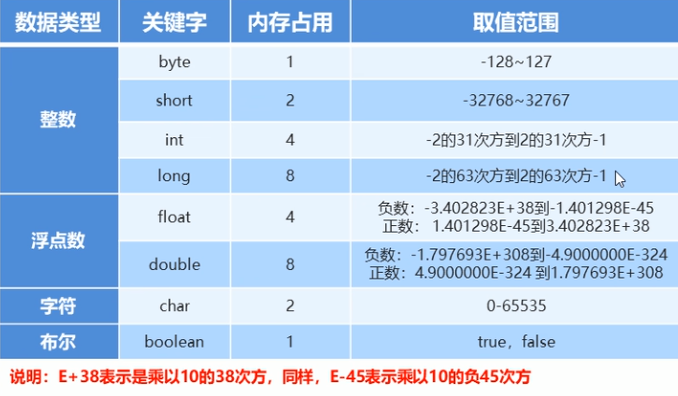
3.5 标识符 定义规则：
由数字、字母、下划线和美元符组成 不能以数字开头 不能是关键字 区分大小写
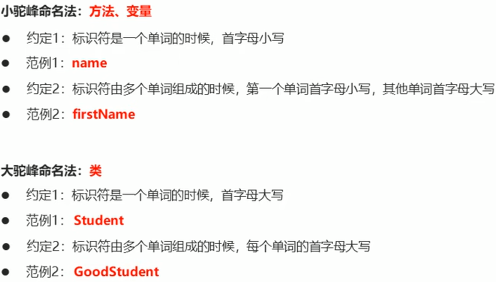
3.6 类型转换 自动类型转换：
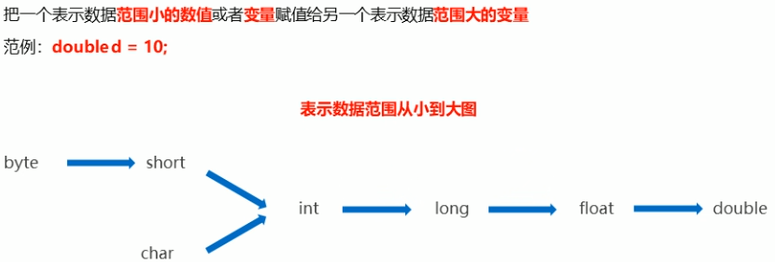
强制类型转换：
注意：+= 等的运算符，隐含强制类型转换
3.7 算术运算符
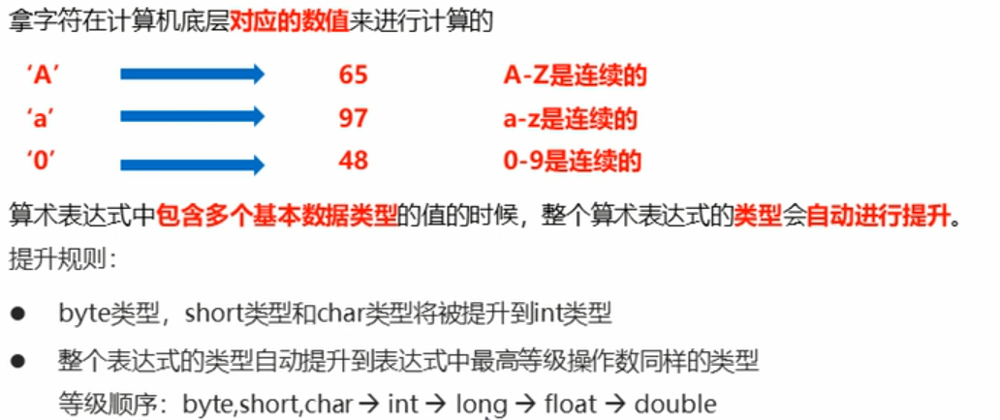
3.8 逻辑运算符
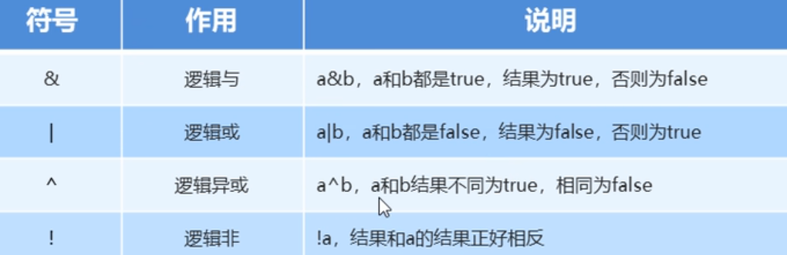
区别在于，对于 &&，只要前一个表达式为 false, 后一个表达式则不运行
但是，& 的表达式都会执行
3.9 数据输入
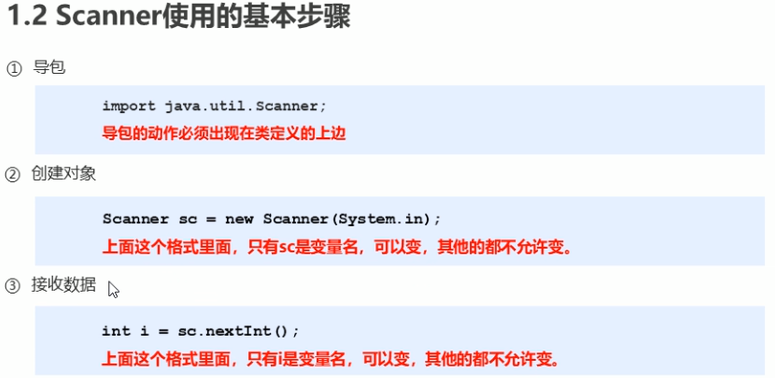
3.10 分支语句 注意一下 Switch 的格式
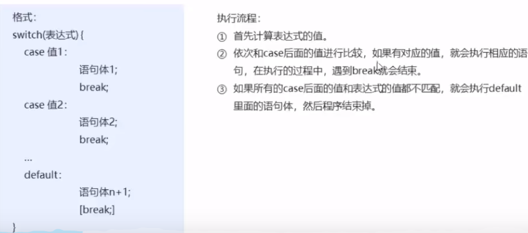
3.10 循环语句 注意 for 循环的结构
1 2 3 for (初始化语句;条件判断语句;条件控制语句) 循环体； }
执行初始化语句 执行条件判断语句：真则继续；假则循环结束 执行循环体语句 执行条件控制语句 4、IDEA 4.1 IDEA中的HelloWorld
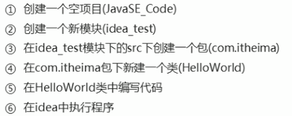
4.2 IDEA 项目结构
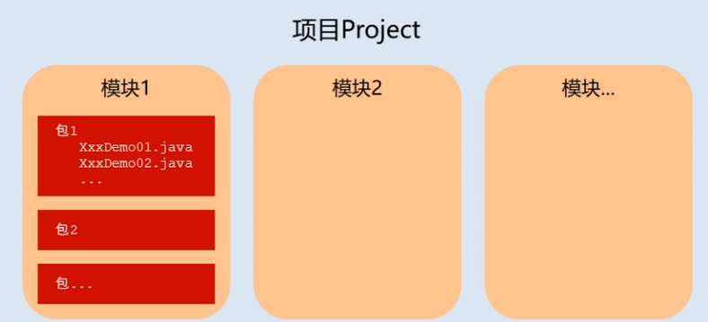
4.3 IDEA 内容辅助键和快捷键 1 2 3 4 5 6 7 8 9 10 11 12 13 14 15 16 17 18 19 20 21 22 23 24 25 26 27 28 29 30 31 32 33 34 35 36 37 38 39 40 41 42 43 // 快速生成语句 1、快速生成main()方法：psvm + 回车 2、快速生成输出语句：sout + 回车 // 内容辅助键 1、内容提示或代码补全： Ctrl + Alt + space Ctrl + Alt + V Alt + / 2、快速生成含有任意形参的构造器和私有属性的 Getter / Setter 方法等【注意：使用 shift 进行多选】 Alt + Insert 3、复制行 Ctrl + D 4、添加新行 (下面) Shift + Enter (上面) Ctrl + Alt + Enter 6、方法参数提醒 Ctrl + p // 编辑快捷键 1、单行注释：Ctrl + / 2、多行注释：Ctrl + Shift + / 3、格式化：Ctrl + Alt + L [i] 4、自动对齐| 整理缩进：Ctrl + Alt + i 5、在方法间快速移动：Alt + Up/Down 6、选中文本并增大选中范围：Ctrl + W 7、删除行：Ctrl + y 8、快速重写基类或者接口中的方法（Override 重写）：Ctrl + O 9、显示类结构图（类的继承层次）：Ctrl + H 10、快速定位到代码块开始|结束位置：Ctrl + [ | ] 11、选中快同时缩进：Tab / Shift + Tab 12、选中相同变量并编辑：Ctrl + F | Ctrl + R 在IDEA中如何看方法源码？ ① 选中方法，`CTRL + B` ② 选中方法，右键选项 `Go to -> Declaration` // 显示类方法摘要 View -> Tool Windows -> Structure -> Move to right // 显示类的信息 Alt + 7
4.4 IDEA 模块操作 4.5 IDEA Debug 断点调试 加断点
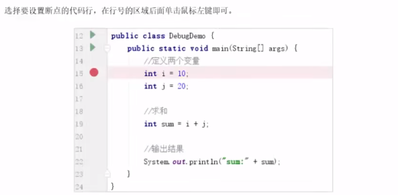
运行断点程序
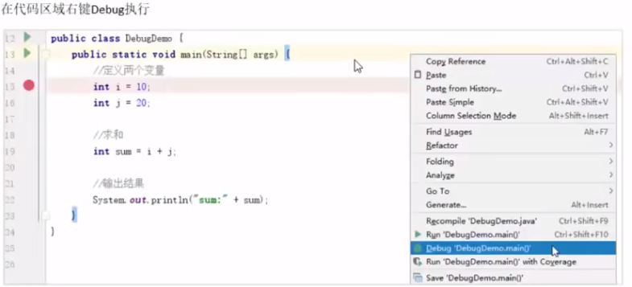
观察 Debugger窗口、Console 窗口
Step Into(F7) 继续执行
再次点击删除断点，也可一次性删除
5、数组 5.1 数组定义格式 推荐第一种定义格式
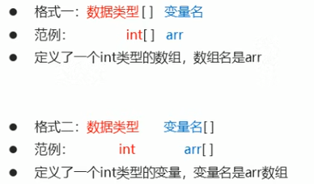
5.2 数组初始化 1、动态初始化
1 2 3 4 5 6 7 8 9 10 11 12 13 14 15 public class Main public static void main (String[] args) int [] arr = new int [3 ]; System.out.println("Hello world!" ); } }
Java中的内存分配
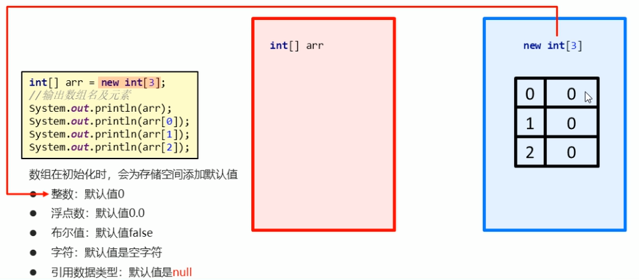
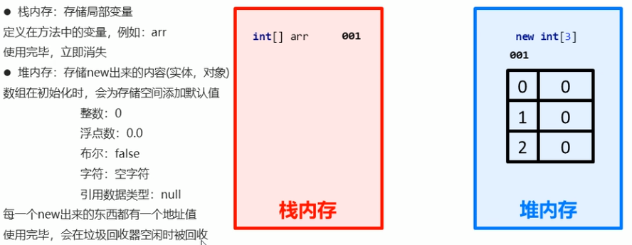
2、静态初始化
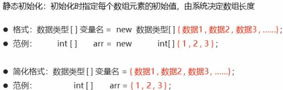
数组操作的两个小问题
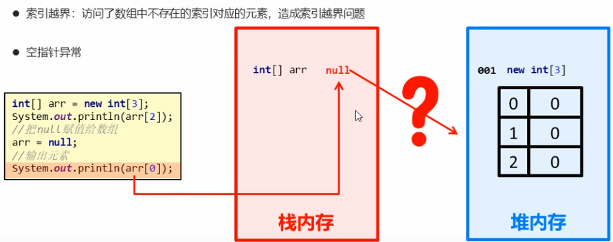
5.3 常见数组操作 6、方法 6.1 方法定义 1 2 3 4 5 6 7 8 方法定义: public static void 方法名(){ } public static void 方法名(int a, int b){ }
方法不能嵌套 void方法表示无返回值，可省略 return，也可直接写 return6.2 方法重载 方法重载是指在同一个类中定义的多个方法之间的关系，满足下列条件的多个方法相互构成重载
多个方法在同一类中 多个方法具有相同的方法名 多个方法的参数不相同（类型不同或数量不同） 两个方法是否构成重载，关键在于
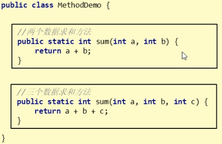
7、类和对象 7.1 类的定义 1 2 3 4 5 6 7 8 9 10 public class 类名 String name; int age; public int getAge () return name; } }
7.2 对象的使用 1 2 3 4 5 6 Phone p = new Phone(); p.brand; p.method()
new 出来的对象在堆内存，堆内存的变量是有默认值的
方法加载进栈内存
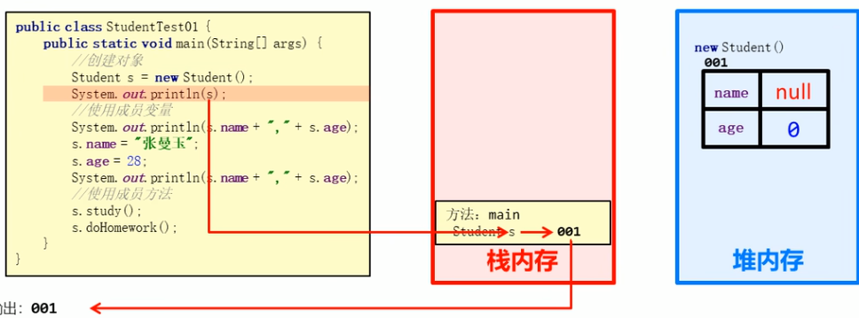
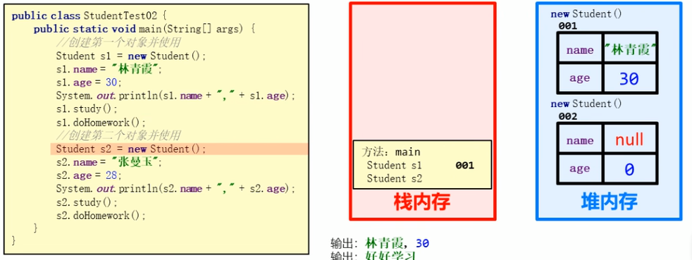
7.3 封装 面向对象的三大特征：封装、继承、多态
针对 private 修饰的成员变量，如果需要被其他类使用，需要提供相应的方法
1 2 3 4 5 6 7 8 9 10 11 12 13 14 15 16 17 18 19 20 21 22 23 public class Student private String name; private int age; public int getAge () return name; } public void setAge (int a) age = a; } public void setAge (int age) age = age; } public void setAge (int age) this .age = age; } }
this 关键字的使用
变量同名时，不使用 this 为局部变量 方法被哪个对象调用，this 就表示哪个对象 7.4 构造方法 1 2 3 4 5 6 7 8 9 10 11 12 13 14 15 16 17 18 19 20 21 22 23 24 25 26 27 28 public class Student private String name; private int age; public Student () public Student (String name) this .name = name; } public int getAge () return name; } public void setAge (int age) this .age = age; } } public class StudentDemo public static void main (String[] args) Student s1 = new Student(); } }
8、字符串 API：Application Programming Interface
String 类在lang 包中，无需导包（仅 Lang 包）
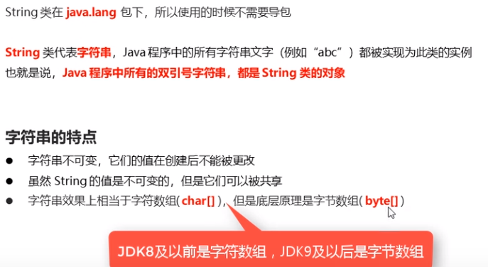
8.1 字符串构造方法
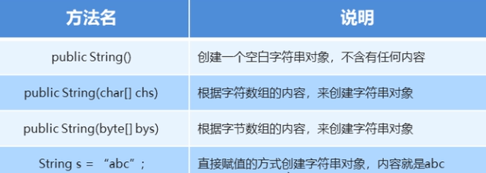
8.2 String 对象的特点 引用变量地址在栈内存，其数据在堆内存
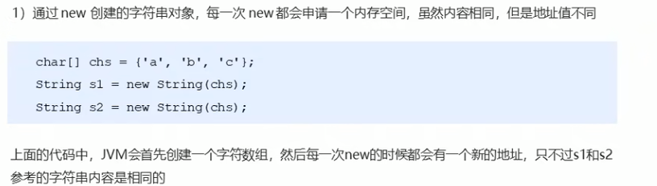
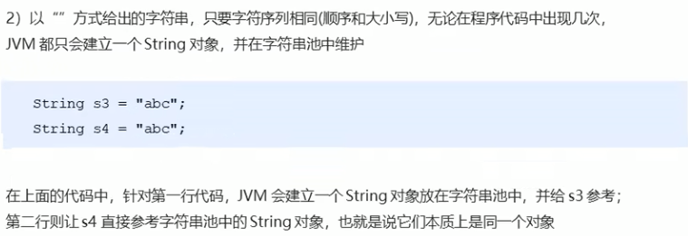
8.3 字符串比较 使用 == 作比较
对于基本类型数据，比较数据值是否相同 对于引用类型数据，比较地址值是否相同 字符串内容比较
1 public boolean equals (Object ss)
8.4 字符串常见方法 1 2 3 4 public char charAt (int index) public int length ()
Java 参考文档
8.5 StringBuilder
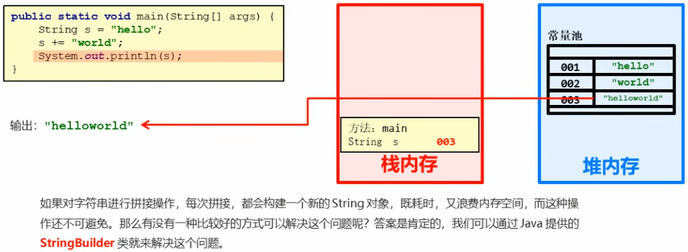
StringBuilder 是一个可变的字符串类，可以视为一个容器，其内容可变是与 String 的区别。
构造方法
1 2 3 4 public StringBuilder () public StringBuilder (String str)
常见方法
1 2 3 4 5 public StringBuilder append (任意类型) 如(链式编程) ：sb.append ("h" ) .append ("i" ) ;public StringBuilder reverse ()
StringBuilder 与 String 的转换
1 2 3 4 5 6 7 StringBuilder sb = new StringBuilder() sb.append("Hello" ); String s = sb.toString() StringBuilder sbb = new StringBuilder(s);
9、集合基础 数据长度固定不可变，这是与集合的区别
集合类的特点：提供一种存储空间可变的存储模型，存储的数据容量可变
集合类：
9.1 构造方法和添加方法 Alt + Insert 快速构造 （Code 栏下）
1 2 3 4 5 6 7 8 9 10 11 import java.util.ArrayList;public Arraylist () 如: ArrayList<Stirng> arr = new ArrayList<>(); 如: ArrayList<Stirng> arr = new ArrayList<String>(); public boolean add (E e) public void add (int index, E element) 注意：index越界会出现异常
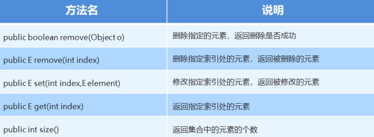
System.exit(0)：JVM退出
10、继承 继承是面向对象三大特征之一，可以使得子类具有父类的属性和方法，还可以在子类中重新定义，追加属性和方法
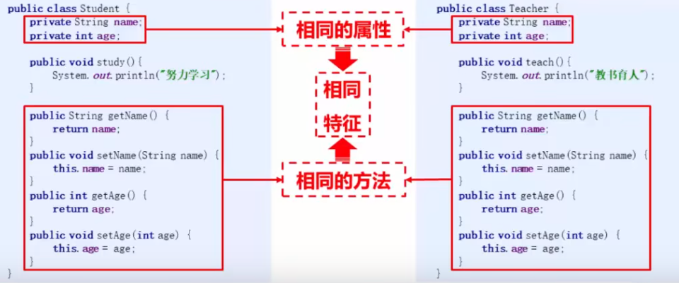
10.1 继承的格式 格式：public class 子类名 entends 父类名{} 10.2 继承的优势与劣势 继承好处
继承劣势
10.3 继承的访问特点 在子类方法中访问一个变量
子类局部范围找 子类成员范围找 父类成员范围找 不考虑父类的父类 10.4 Super 关键字
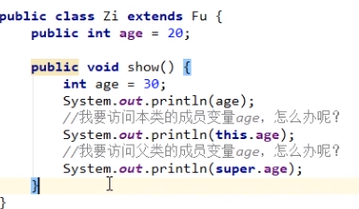
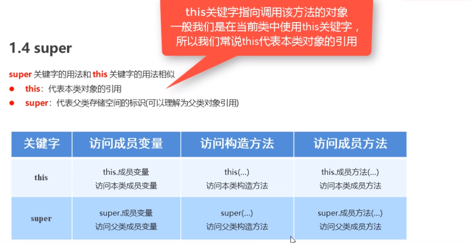
10.5 继承中构造方法的访问特点 若删除父类中的无参构造方法 ，则子类中的构造方法全部报错
解决办法一：使用 super(args) 去访问父类带参数的构造方法
解决办法二：在父类中提供一个无参构造方法（推荐）
10.6 继承中成员方法的访问特点 在子类方法中访问一个方法
10.7 super 内存图
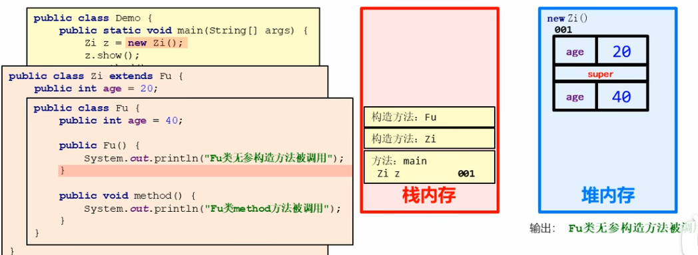
10.8 方法重写 子类中出现和父类中一模一样的方法声明
1 2 3 4 5 6 7 8 9 10 11 12 13 public void call (String name) System.out.println(name); } @Override ---- 注解：自动检测方法名是否相同，不相同则报错public void call (String name) System.out.println("new method" ); super .call("he" ); }
方法重写注意事项
父类中的私有方法，子类不能重写 子类方法访问权限不能更低（public > 默认 > private） 继承注意事项
Java 中的类只支持单继承，不支持多继承Java 中类支持多层继承案例：猫和狗
1 2 3 4 5 6 7 8 9 10 ① 定义动物类（Animal） 成员变量：姓名，年龄 构造方法：带参，无参 成员方法：get /set ② 定义猫类（Cat） 构造方法：带参，无参 成员方法：抓老鼠() ③ 定义狗类（Dog） 构造方法：带参，无参 成员方法：看门()
11、修饰符 11.1 包 用于对类进行分类管理
包的定义格式
package 包名; (多级包用 . 分开)
带包的 Java 类编译和执行
1 2 3 4 5 6 7 package com.demo;public class HelloWorld public static void main (String[] args) System.out.println("HelloWorld" ); } }
1、手动建包
导包
11.2 权限修饰符
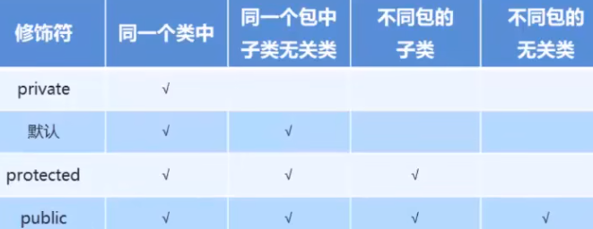
11.3 状态修饰符 1、final ：最终的意思，可以修饰成员方法、成员变量、类
修饰方法：最终方法，不能被重写 修饰变量：常量，不能被再次赋值 修饰类：最终类，不能被继承 修饰局部变量变量是基本类型：数据值不能改变 变量是引用类型：地址值不能改变 2、static ：静态，可以修饰成员方法、成员变量
1 2 3 4 5 6 7 public String unversity;public static String unversity;Student.university = "xxx" ;
非静态的成员方法
能访问静态的成员变量 能访问静态的成员方法 能访问非静态的成员变量 能访问非静态的成员方法 静态的成员方法
静态成员方法只能访问静态成员
因为 main 方法为静态，所以被调用方法设置为静态，以方便调用
12、多态 同一对象，在不同时刻表现出来的不同形态
如：Cat cat = new Cat();
Animal ani = new Cat();
多态的前提和体现：
有继承/实现关系
有方法重写
有父类引用指向子类对象
Animal ani = new Cat();
12.1 多态中成员的访问特点 成员变量：编译看左边，执行看左边（即Animal） 成员方法：编译看左边，执行看右边 因为成员方法有重写，而变量没有
12.2 多态的优势与弊端 1 2 3 4 5 6 7 8 9 10 11 12 13 14 15 16 17 18 19 20 21 22 23 24 25 26 27 28 29 30 31 32 33 34 35 36 37 38 39 40 41 42 43 44 45 46 47 48 49 50 51 52 53 54 55 56 57 58 59 60 public class AnimalOperator public void useAnimal (Cat c) c.eat(); } public void useAnimal (Dog d) d.eat(); } public void useAnimal (Animal a) a.eat(); a.work(); } } public class Animal public void eat () System.out.println("动物吃食物" ); } } public class Cat extends Animal @Override public void eat () System.out.println("猫吃鱼" ); } public void work () System.out.println("猫抓老鼠" ); } } public class Dog extends Animal @Override public void eat () System.out.println("狗吃骨头" ); } } ... public class AnimalDemo public static void main (String args[]) AnimalOperator ao = new AnimalOperator(); Cat c = new Cat(); ao.useAnimal(c); Dog d = new Dog(); ao.useAnimal(d); Pig p = new Pig(); ao.useAnimal(p); Animal ac = new Cat(); ao.useAnimal(ac); } }
12.3 多态中的转型 向上转型：从子到父，父类引用指向子类对象 向下转型：从父到子，父类引用转为子类对象 1 2 3 4 5 6 7 8 9 10 11 12 13 14 15 16 17 public class AnimalDemo public static void main (String args[]) Animal ac = new Cat(); ac.eat(); Cat c1 = new Cat(); c1.eat(); c1.work(); Cat c2 = (Cat)ac; c2.eat(); c2.work(); } }
转型内存执行过程
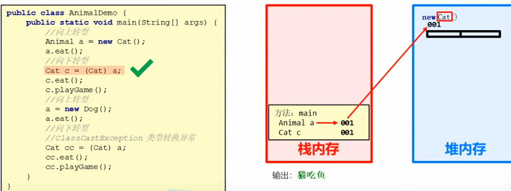
13、抽象类 在 Java 中，没有方法体的方法应该定义为抽象方法，而类中如果有抽象方法，该类必须定义为抽象类
1 2 3 public abstract class Animal public abstract void eat () }
抽象类的特点：
抽象的成员特点
成员变量：可以是常量，可以是变量 构造方法：有构造方法，但是不能实例化，其用于子类访问父类数据的初始化 成员方法可以是抽象方法，用于限定子类必须完成某些动作 可以是非抽象方法，提高代码复用性（可被继承） 14、接口 接口就是一种公共的规范标准，只要符合规范。Java 中的接口更多体现在对 行为的抽象 。
14.1 接口的特点 1 2 3 4 5 6 7 8 9 10 11 12 13 14 15 16 17 18 19 20 21 public interface Jumpping public abstract void jump () } public class Cat implements Jumpping @Override public void jump () System.out.println("跳高" ); } } public class JumpDemo public static void main (String[] args) Jumpping j = new Cat(); j.jump(); } }
一般在接口名后加 Impl 为接口实现类的名称
14.2 接口的成员特点 成员变量：只能是常量，默认修饰符 public static final 构造方法：接口中没有构造方法，因为接口主要是对行为进行抽象的，没有具体存在 一个类如果没有父类，默认继承自 Object 类 成员方法：只能是抽象方法，默认修饰符：public abstract 接口的特性，在 JDK8-JDK9 中有新特性
1 2 3 4 5 6 7 8 9 10 11 12 13 14 15 16 17 18 19 20 21 22 23 24 25 26 27 28 public interface Inter public int num = 10 ; public final int num2 = 20 ; public static final int num3 = 30 ; public abstract void method () } public class InterImpl implements Inter public class InterImpl extends Object implements Inter public InterImpl () super (); } } public class InterDemo public static void main (String args[]) Inter i = new InterImpl(); System.out.println(num2); System.out.println(Inter.num2); System.out.println(num2); } }
案例
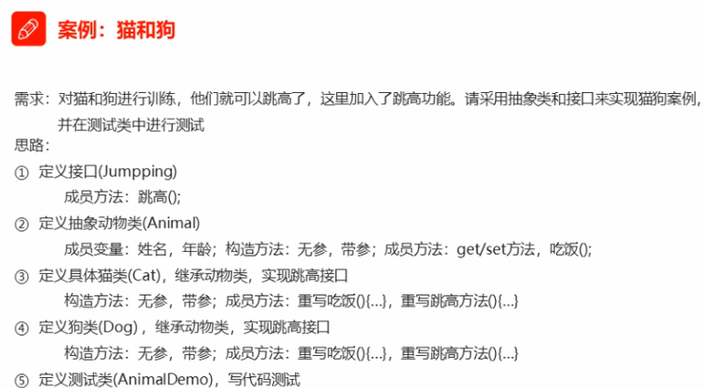
1 2 3 4 5 6 7 8 9 10 11 12 13 14 15 16 17 18 19 20 21 22 23 24 25 26 27 28 29 30 31 32 33 34 35 36 37 38 39 40 41 42 43 44 45 46 47 48 49 public interface Jumpping public abstract void jump () } public abstract class Animal private String name; private int age; public abstract void eat () } public class Cat extends Animal implements Jumpping @Override public void eat () System.ou.println("猫吃鱼" ); } @Override public void jump () System.ou.println("猫跳高" ); } } public class AnimalDemo public static void main (String[] args) Jumpping j = new Cat(); j.jump(); Animal a = new Cat(); a.setName("加菲" ); a.setAge(5 ); a.eat(); Cat c = new Cat(); } }
14.3 接口和类的关系 类和类的关系：继承关系，只能单继承，但可以多层继承 类和接口的关系：实现关系，可以单实现，也可以多实现，还可以在继承一个类的同时实现多个接口 接口和接口的关系：继承关系，可以单继承，也可以多继承 1 2 3 4 5 6 7 8 9 public interface Inter1 public class InterImpl implements Inter1 ,Inter2 public class InterImpl extends Object implements Inter1 ,Inter2 public interface Inter3 extends Inter1 , Inter2
14.4 接口和抽象类的区别 成员区别抽象类：常量、变量；有构造方法；有抽象方法，也有非抽象方法 接口：常量；抽象方法 关系区别类与类：单继承 类与接口：单实现、多实现 接口与接口：单继承、多继承 设计理念区别抽象类：对事物 抽象，包括属性、行为 接口：对行为 抽象，主要是行为
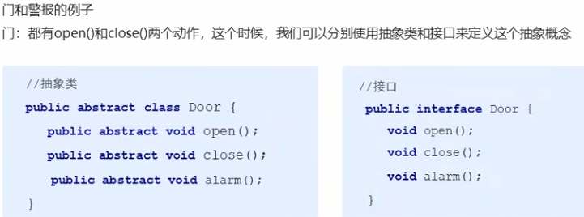
但是，后来的有的门具有了报警功能，直接加入类和接口都不适合
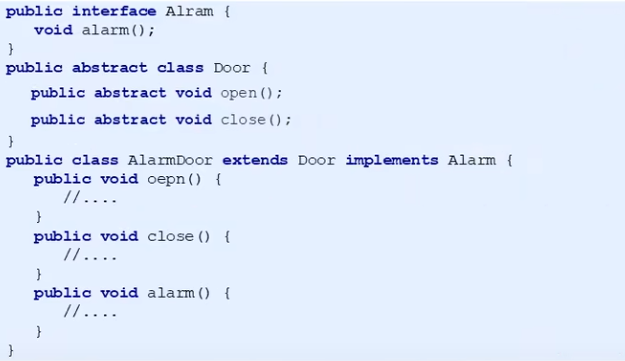
案例：
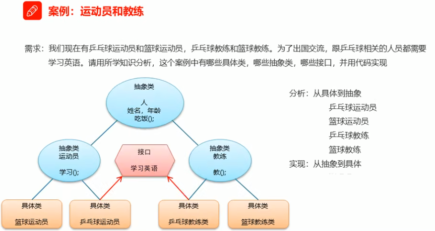
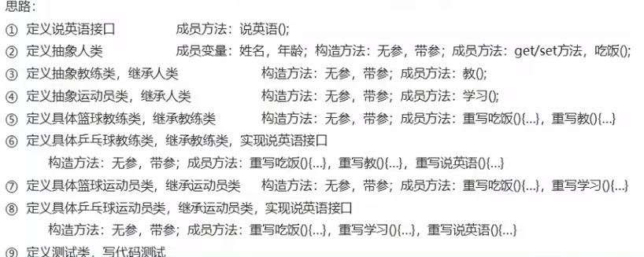
分析从具体到抽象，实现从抽象到具体
14.5 形参和返回值 类名作为形参和返回值
方法的形参是类名，需要的是该类的对象 方法的返回值是类名，返回的是该类的对象 抽象类名作为形参和返回值
方法的形参是抽象类名，需要的是该抽象类的子类对象【抽象类不能实例化，只能使用多态，用抽象类型引用子类对象】 方法的返回值是抽象类名，返回的是该抽象类的子类对象 接口名作为形参和返回值
方法的形参是接口名，需要的是该接口的实现类对象 方法的返回值是类名，返回的是该接口的实现类对象 1 2 3 4 5 6 7 8 9 10 11 12 13 14 15 16 17 18 19 20 21 22 23 24 25 26 27 28 29 30 31 32 33 34 35 36 public interface Jumpping void jump () } public class JumppingOperator public void userJumpping (Jumpping j) j.jump(); } public Jumpping getJumpping () Jumpping j = new Cat(); return j; } } public class Cat implements Jumpping @Override public void jump () System.out.println("猫跳高" ); } } public class JumppingDemo public static void main (String[] args) JumppingOperator jo = new JumppingOperator(); Jumpping j = new Cat(); j0.userJumpping(j); Jumpping j2 = jo.getJumpping(); j2.jump(); } }
15、内部类 内部类，即在一个类中定义另一个类。
1 2 3 4 5 public class Outer public class Inner } }
内部类可以直接访问外部类的成员，包括私有 外部类访问内部类，需要创建对象 1 2 3 4 5 6 7 8 9 10 11 12 13 14 public class Outer private int num = 10 ; public class Inner public void show () System.out.println(num) } } public void method () Inner i = new Inner(); i.show(); } }
按照内部类在类中定义位置的不同，可分为
在类的成员位置：成员内部类 在类的局部位置：局部内部类 15.1 成员内部类 1 2 3 4 5 6 7 8 9 10 11 12 13 14 15 16 17 18 19 public class Outer private int num = 10 ; public class Inner public void show () System.out.println(num) } } } public class InnerDemo public static void main (String[] args) Outer.Inner oi = new Outer().new Inner () ; oi.show(); } }
修改内部类为私用，则测试类中的访问内部类的方法失效。
此时，使用外部类来间接访问内部类【常用】
1 2 3 4 5 6 7 8 9 10 11 12 13 14 15 16 17 18 19 20 21 22 23 24 public class Outer private int num = 10 ; private class Inner public void show () System.out.println(num) } } public void method () Inner i = new Inner(); i.show(); } } public class InnerDemo public static void main (String[] args) Outer o = new Outer(); o.method(); } }
15.2 局部内部类 局部内部类是在方法中定义的类，外界无法直接使用
该类可以直接访问内部类的成员，也可以访问方法内的局部变量
1 2 3 4 5 6 7 8 9 10 11 12 13 14 15 16 17 18 19 20 21 22 23 24 25 26 public class Outer private int num = 10 ; public void method () int num2 = 20 ; class Inner public void show () System.out.println(num); System.out.println(num2); } } Inner i = new Inner(); i.show(); } } public class OuterDemo public static void main (String[] args) Outer o = new Outer(); o.method(); } }
15.3 匿名内部类 属于局部内部类，是局部内部类的特殊形式
前提：存在一个类或者接口【类可以是抽象的，也可以是具体的】
其本质是一个匿名的对象
1 2 3 4 5 new Inter() { public void show () }
1 2 3 4 5 6 7 8 9 10 11 12 13 14 15 16 17 18 19 20 21 22 23 24 25 26 27 28 29 30 31 32 33 34 35 36 37 38 39 public interface Inter void show () } public class Outer public void method () new Inter() { @Override public void show () System.out.println("匿名内部类" ); } }; new Inter() { @Override public void show () System.out.println("匿名内部类" ); } }.show(); Inter i = new Inter() { @Override public void show () System.out.println("匿名内部类" ); } }; i.show(); i.show(); } } public class OuterDemo public static void main (String[] args) Outer o = new Outer(); o.method(); } }
15.4 匿名内部类在开发中的使用 1 2 3 4 5 6 7 8 9 10 11 12 13 14 15 16 17 18 19 20 21 22 23 24 25 26 27 28 29 30 31 32 33 34 public interface Jumpping void jump () } public class Cat implements Jumpping @Override public void jump () System.out.println("猫跳高" ); } } public class JumppingOperator public void method (Jumpping j) j.jump(); } } public class JumppingDemo public static void main (String[] args) JumppingOperator jo = new JumppingOpeartor(); jumpping j = new Cat(); jo.method(j); jo.method(new Jumpping() { @Override public void jump () System.out.println("猫跳高" ); } }) } }
二、常用API 1、Math 类 Math 包含执行基本数字运算的方法【Java.lang】
若没有构造方法，看是否是静态的，若是，通过类名就可以直接调用
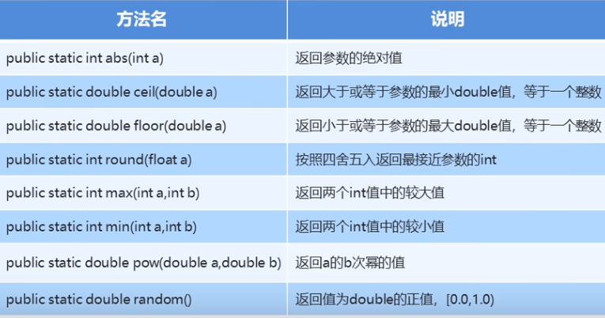
2、System 类 System 包含几个有用的类字段和方法，它不能被实例化
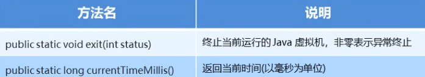
1 2 3 4 5 6 7 8 9 10 11 12 13 14 15 16 17 18 19 public class SystemDemo public static void main (String[] args) System.exit(0 ); System.out.println( System.currentTimeMillis() *1.0 /1000 /60 /24 /365 + "年" ); long start = System.currentTimeMillis(); for (int i; i < 1000 ; i++) System.out.println(i); long end = System.currentTimeMillis(); System.out.println("耗时" + (end - start) + "毫秒" ); } }
3、Object 类 Object 是类Object结构的根。 每个班都有Object作为超类。 所有对象（包括数组）都实现了这个类的方法。
3.1 构造方法 public Object()
为什么子类构造方法默认访问父类的无参构造方法？
因为它们的顶级父类只有无参构造方法
在IDEA中如何看方法源码？
① 选中方法，CTRL + B
② 选中方法，右键选项 Go to -> Declaration
1 2 3 4 5 6 7 8 9 10 public class ObjectDemo public static void main (String[] args) Student s = new Student(); s.setName("林青霞" ); s.setAge(30 ); System.out.println(s); System.out.println(s.toString()); } }
1 public String toString ()
返回 对象的字符串表示形式。一般来说， toString方法返回一个“textually代表”这个对象的字符串。结果应该是一个简明扼要的表达，容易让人阅读。建议所有子类覆盖此方法。【建议重写】
该toString类方法Object返回一个由其中的对象是一个实例，该符号字符的类的名称的字符串@` ”和对象的哈希码的无符号的十六进制表示。 换句话说，这个方法返回一个等于下列值的字符串：
getClass().getName() + '@' + Integer.toHexString(hashCode())
结果： 对象的字符串表示形式。
重写方法 【手动 | 自动生成】
Alt + Insert 自动生成 toString 方法
3.2 Object 类常用方法
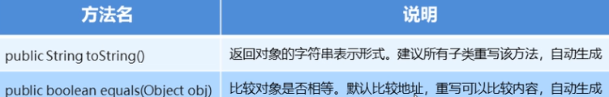
public boolean equals(Object obj)
1 2 3 4 5 6 7 8 9 10 11 12 13 14 15 16 17 18 19 20 21 22 23 24 25 26 27 28 29 30 31 32 33 34 35 36 37 38 39 40 41 42 43 44 public class ObjectDemo public static void main (String[] args) Student s1 = new Student(); s1.setName("林青霞" ); s1.setAge(30 ); Student s2 = new Student(); s2.setName("林青霞" ); s2.setAge(30 ); System.out.println(s1.equals(s2)); System.out.println(s1.equals(s2)); } }
4、Arrays Java.util 包，其内部方法均使用 static 修饰
1 2 3 4 5 6 7 8 9 10 11 12 13 14 15 16 17 18 19 20 21 22 23 24 25 26 27 28 29 30 31 32 public class ArrayDemo public static void main (String[] args) int [] arr = {24 , 69 , 80 , 57 , 13 }; System.out.println("排序前：" + arrayToString(arr)); for (int x=0 ; x<4 ; x++) { for (int i=0 ; i<arr.length-1 -x; i++){ if (arr[i] > arr[i+1 ]) { int temp = arr[i]; arr[i] = arr[i+1 ]; arr[i+1 ] = temp; } } } } public static String arrayToString (int [] arr) StringBuilder sb = new StringBuilder(); sb.append("[" ); for (int i = 0 ; i < arr.length; i++) { if (i == arr.length-1 ) { sb.append(ar[i]); } else { sb.append(arr[i]).append("," ); } } sb.append("]" ); String s = sb.toString(); return s; } }
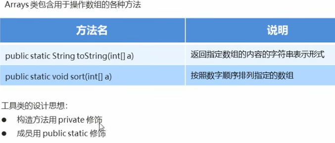
1 2 3 4 5 6 7 8 9 10 public class ArrayDemo public static void main (String[] args) int [] arr = {24 , 69 , 80 , 57 , 13 }; System.out.println("排序前：" + Arrays.toString(arr)); Arrays.sort(arr); System.out.println("排序后：" + Arrays.toString(arr)); } }
Arrays 类内部使用私有的无参构造
1 2 3 4 5 6 public class Arrays private Arrays () }
5、基本类型包装类 将基本数据类型封装成对象的好处在于，可以在对象中定义更多方法来操作数据。【常用操作：基本数据类型与字符串之间的转换】
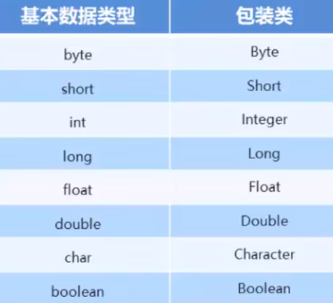
5.1 Integer类
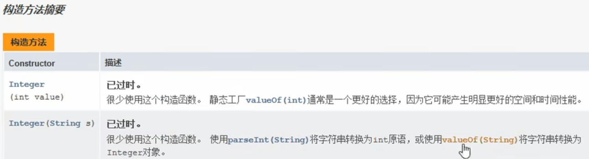
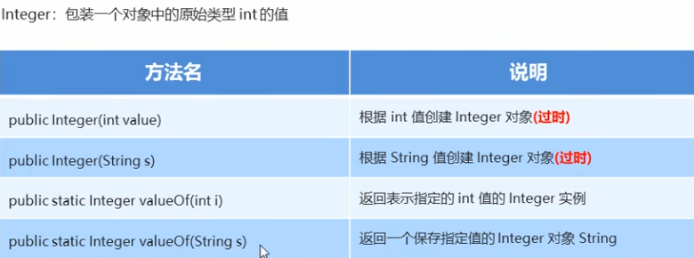
1 2 3 4 5 6 7 8 9 10 11 public class IntegerDemo public static void main (String[] args) Integer i1 = new Integer(100 ); Integer i2 = new Integer("100" ); Integer i3 = Integer.valueOf(100 ); Integer i4 = Integer.valueOf("100" ); } }
特定常量
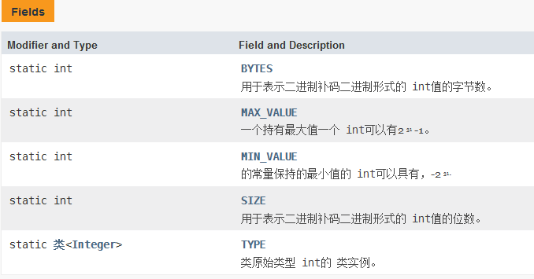
5.3 int 和 String 的相互转换
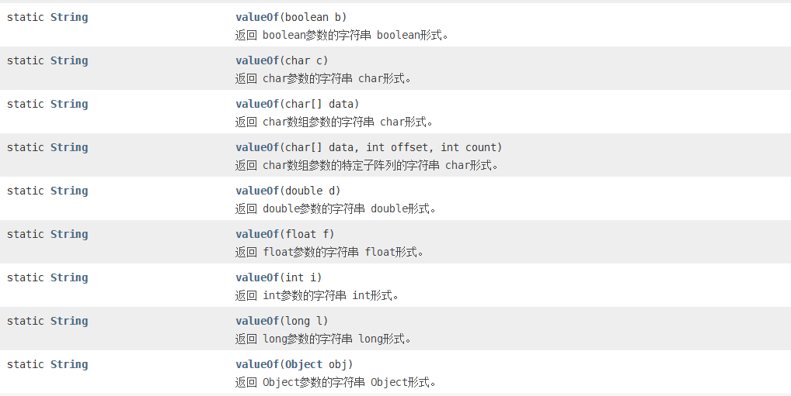
1 2 3 4 5 6 7 8 9 10 11 12 13 14 15 16 17 18 19 20 21 22 public class IntegerDemo public static void main (String[] args) int num = 100 ; int s = "100" ; String s1 = "" + num; System.out.println(s1); String s2 = String.valueOf(num); System.out.println(s2); Integer i = Integer.valueOf(s); int i1 = i.intValue() int i2 = Integer.parseInt(s); } }
案例：字符串中的数据排序
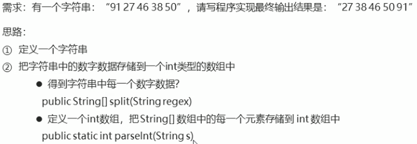
1 2 3 4 5 6 7 8 9 10 11 12 13 14 15 16 17 18 19 20 21 22 23 24 25 26 27 28 29 30 31 32 import java.util.Arrays;public class Main public static void main (String[] args) String s = "91 27 46 38 50" ; String[] strArray = s.split(" " ); int [] arr = new int [strArray.length]; for (int i = 0 ; i < arr.length; i++) { arr[i] = Integer.parseInt(strArray[i]); } System.out.println("排序前" ); for (int i = 0 ; i < arr.length; i++) { System.out.println(arr[i]); } Arrays.sort(arr); StringBuffer sb = new StringBuffer(); for (int i =0 ;i<arr.length;i++){ if (i==arr.length-1 ) { sb.append(arr[i]); }else { sb.append(arr[i]).append("," ); } } System.out.println("排序后" ); for (int i = 0 ; i < arr.length; i++) { System.out.println(arr[i]); } } }
5.4 自动装箱和拆箱 装箱：把基本数据类型转化为对应的包装类类型 拆箱：把包装类类型转换为对应的基本数据类型 1 2 3 4 5 6 7 8 9 10 11 12 13 14 15 16 17 public class Main public static void main (String[] args) Integer i = Integer.valueOf(100 ); Integer ii = 100 ; ii = i1.intValue() + 200 ; ii += 200 ; System.out.println(ii); } }
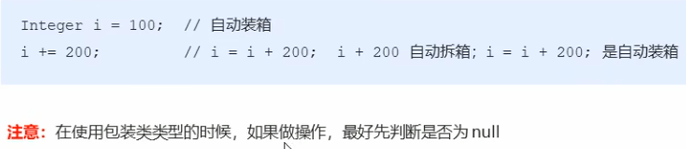
6、日期类 6.1 Date 类 此处为 java.util.Date，它是 java.sql.Date 的父类
Date 代表一个特定的时间，精确到毫秒
1 2 3 4 5 6 7 8 9 10 11 12 13 14 import java.util.Date;public class Main public static void main (String[] args) Date d1 = new Date(); System.out.println(d1); long date = 1000 *60 *60 ; Date d2 = new Date(date); System.out.println(d2); } }
6.2 Date 类常用方法
获取当前系统时间：System.currentTimeMillis()
java.lang.Object java.text.Format java.text.DateFormat java.text.SimpleDateFormat 于 java.text 包中，用于格式化日期数据。
SimpleDateFormat是一个具体的类，用于以区域设置敏感的方式格式化和解析日期。 它允许格式化（日期文本），解析（文本日期）和归一化。
日期和时间格式由日期和时间模式 字符串指定。
在日期和时间模式字符串中，从'A'到'Z'和从'a'到'z'的非引号的字母被解释为表示日期或时间字符串的组件的模式字母。 可以使用单引号（ ' ）引用文本，以避免解释。 "''"代表单引号。 所有其他字符不被解释; 在格式化过程中，它们只是复制到输出字符串中，或者在解析过程中与输入字符串匹配。
构造方法
格式化和解析日期
1 2 3 4 5 6 7 8 9 10 11 12 13 14 15 16 17 18 19 20 21 22 23 24 25 import java.text.ParseException;import java.text.SimpleDateFormat;import java.util.Date;public class Demo public static void main (String[] args) throws ParseException Date d = new Date(); SimpleDateFormat sdf1 = new SimpleDateFormat(); String s1 = sdf1.format(d); SimpleDateFormat sdf2 = new SimpleDateFormat("yyyy-MM-dd HH:mm:ss" ); String s2 = sdf2.format(d); System.out.println(s1); System.out.println(s2); String ss = "2048-08-09 11:11:11" ; Date dd = sdf2.parse(ss); System.out.println(dd); } }
注意：一般定义工具栏时，构造方法私有，成员方法静态
6.4 Calenda 类 于 Java.util 包下，继承自 Object 类，为抽象类
1 2 3 public abstract class Calendar extends Object implements Serializable , Cloneable , Comparable <Calendar >
Calendar 为某一时刻和一组日历字段之间的转换提供了一些方法，并为操作日历字段提供一些方法
其提供一个类方法 getInstance() 用于获取Calendar 对象，其日历字段已使用当前日期和时间初始化：
1 Calendar rightNow = Calendar.getInstance;
1 2 3 4 5 6 7 8 9 10 11 12 13 14 15 16 17 18 19 import java.util.Calendar;public class Demo public static void main (String[] args) Calendar c = Calendar.getInstance(); int year = c.get(Calendar.YEAR); int month = c.get(Calendar.MONTH) + 1 ; int day = c.get(Calendar.DATE); System.out.println(year + "年" + month + "月" + day + "日" ); } }
Calendar 类常用方法
1 2 3 4 5 6 7 8 9 10 11 12 13 14 15 16 17 18 19 20 21 22 23 24 25 26 27 28 29 30 31 32 33 import java.util.Calendar;public class Demo public static void main (String[] args) Calendar c = Calendar.getInstance(); int year = c.get(Calendar.YEAR); int month = c.get(Calendar.MONTH) + 1 ; int day = c.get(Calendar.DATE); System.out.println(year + "年" + month + "月" + day + "日" ); c.add(Calendar.YEAR, -3 ); year = c.get(Calendar.YEAR); month = c.get(Calendar.MONTH) + 1 ; day = c.get(Calendar.DATE); System.out.println(year + "年" + month + "月" + day + "日" ); c.add(Calendar.YEAR, 10 ); c.add(Calendar.DATE, -5 ); c.set(2048 , 11 , 11 ); year = c.get(Calendar.YEAR); month = c.get(Calendar.MONTH) + 1 ; day = c.get(Calendar.DATE); System.out.println(year + "年" + month + "月" + day + "日" ); } }
6.5 案例：二月天
1 2 3 4 5 6 7 8 9 10 11 12 13 14 15 16 17 import java.util.Calendar;import java.util.Scanner;public class Demo public static void main (String[] args) Scanner sc = new Scanner(System.in); System.out.println("请输入年份：" ); int year = sc.nextInt(); Calendar c = Calendar.getInstance(); c.set(year, 2 , 1 ); c.add(Calendar.DATE, -1 ); int d = c.get(Calendar.DATE); System.out.println(d); } }
7、异常 1 2 3 4 5 6 7 8 public class Demo public static void main (String[] args) int [] arr = {1 , 2 , 3 }; System.out.println(arr[1 ]); System.out.println(arr[3 ]); } }
ArrayIndexOutOfBoundsException
其中，Throwable类是所有错误和异常的超类，其有两个子类：
异常【Exception】 错误【Error】：严重错误，不应该试图捕获
类异常及其子类是形式Throwable指示合理的应用程序想要捕获的条件。
异常类和任何不是RuntimeException的子类的子类都是检查异常 。 检查的异常需要在方法或构造函数的throws子句中声明，如果它们可以通过执行方法或构造函数抛出，并在方法或构造函数边界之外传播。
RuntimeException是在Java虚拟机的正常操作期间可以抛出的那些异常的超类。
RuntimeException及其子类是未经检查的异常 ， unchecked异常不需要在方法或构造函数的拟申报throw条款 。【即出现错误需要修改代码】
java.lang.Objectjava.lang.Throwablejava.lang.Exceptionjava.lang.RuntimeException7.1 JVM 虚拟机对异常的默认处理方案 如果程序出现问题，并且程序没有做任何处理，最终JVM会做默认处理
把异常的名称、异常的原因及异常出现位置等信息输出在控制台 程序停止执行 7.2 异常处理 异常处理，两种方案
try...catch：从 try 代码块开始执行，出现异常时自动生成一个异常类对象，该异常对象将被提交给 Java 运行时系统；当 Java 运行时系统接收到异常对象时，会到 catch 中去找匹配的异常类，并进行异常处理；执行完毕之后，程序继续执行 1 2 3 4 5 6 7 8 try { 可能出现异常的代码; } catch (异常类名 变量名) { 异常处理的代码; } 方法 {} throws 异常类名;
1 2 3 4 5 6 7 8 9 10 11 12 13 public class Demo public static void main (String[] args) try { int [] arr = {1 , 2 , 3 }; System.out.println(arr[1 ]); System.out.println(arr[3 ]); } catch (ArrayIndexOutOfBoundsException e) { System.out.println("已越界" ); e.printStackTrace(); } } }
7.3 Throwable 的成员方法 Throwable 是所有异常的父类
1 2 3 4 5 6 7 8 9 10 11 public class Throwable private String detailMessage; public Throwable (String message) detailMessage = message; } public String getMessage () return detailMessage; } }
7.4 编译时异常和运行时异常的区别 Java 中的异常被分为两大类：编译时异常和运行时异常，也称受检异常和非受检异常。
所有的 RuntimeException 类及其子类均为运行时异常，其他异常都是编译时异常。
编译时异常：必须显示处理，否则程序发生错误，无法通过编译 运行时异常：无需显示处理，也可以和编译时异常一样处理 1 2 3 4 5 6 7 8 9 10 11 12 13 14 15 16 public class Demo public static void main (String[] args) try { String s = "2048-11-11" ; SimpleDateFormat sdf = new SimpleDateFormat("yyyy-MM-dd" ); Date d = sdf.parse(s); System.out.println(d); } catch (ParseException e) { e.printStackTrace(); } } }
7.5 Throws 异常处理 1 2 3 4 5 6 7 8 9 10 public class Demo public static void main (String[] args) throws ParseException String s = "2048-11-11" ; SimpleDateFormat sdf = new SimpleDateFormat("yyyy-MM-dd" ); Date d = sdf.parse(s); System.out.println(d); } }
编译时异常必须要进行显式处理，使用两种方案。若采用 Throws ，之后谁调用谁处理 运行时异常可以不处理，出现问题后，需要我们回来修改代码 7.6 自定义异常 只要继承自 RuntimeException（运行时异常） 或者 Exception（编译时异常），就可以实现自定义异常
1 2 3 4 public class 异常类名 extends Exception 无参构造; 带参构造; }
1 2 3 4 5 6 7 8 9 10 11 12 13 14 15 16 17 18 19 20 21 22 23 24 25 26 27 28 29 30 31 32 33 34 35 public class ScoreException extends Exception public ScoreException () public ScoreException (String message) super (message); } } public class Teacher public void checkScore (int score) throws ScoreException if (score < 0 || score > 100 ) { throw new ScoreException("分数有误" ); } else { System.out.println("分数正常" ); } } } public class Demo public static void main (String[] args) throws ParseException Scanner sc = new Scanner(System.in); System.out.println("请输入分数" ); int score = sc.nextInt(); Teacher t = new Teacher(); try { t.checkScore(score); } catch (ScoreException e) { e.printStackTrace(); } } }
7.7 throws 与 throw 的区别